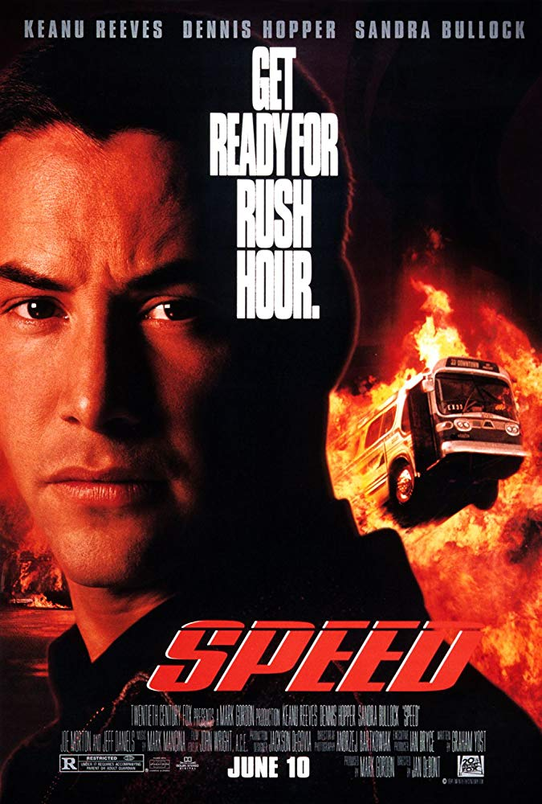
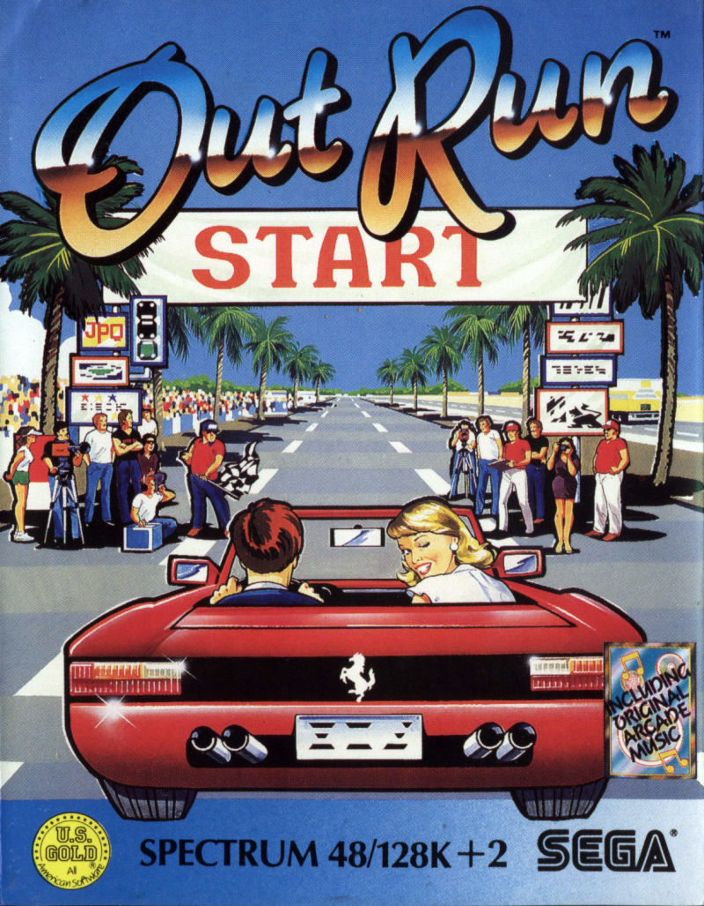
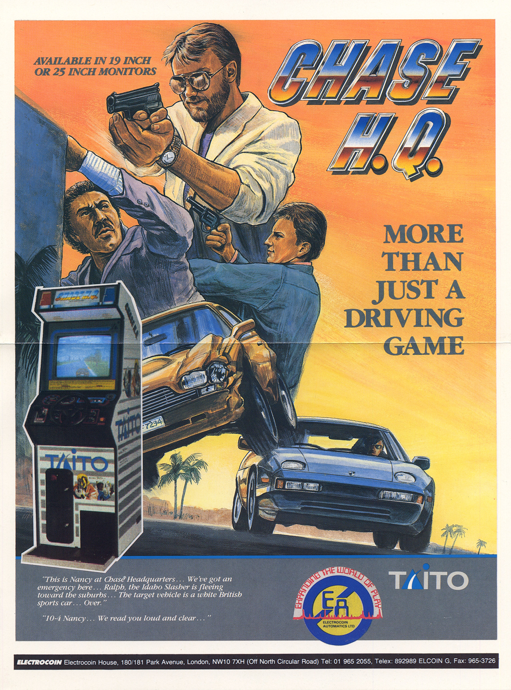
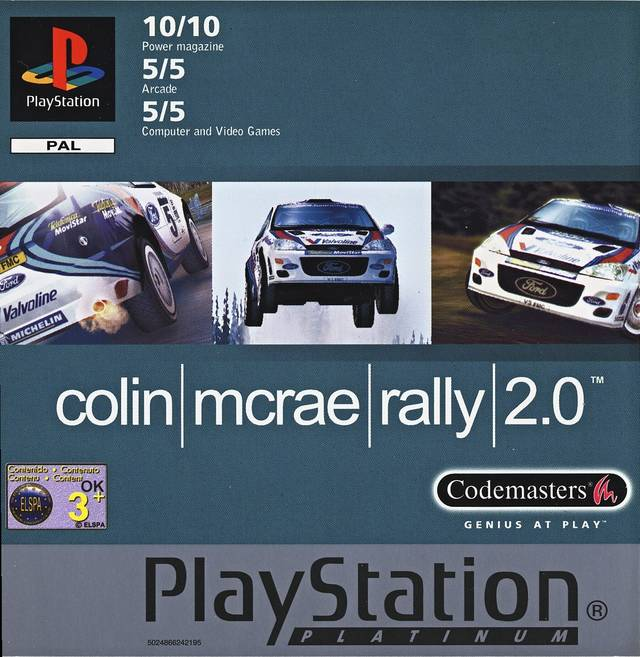

Self-driving stuff
Репозитории
Self-driving cars utils
Описание:
- Претренированные сети семантической сегментации (CityScapes категории)
- Скрипты для взаимодействия с симулятором CARLA
- Скрипты для конвертации автомобильных форматов датасетов
Цикл мастер-классов “Как собрать беспилотник за 1.5 часа”
Глава 0. Тест-драйв технологий
Поверхностный обзор того, как данную задачу решают в различных проектах. Быстрое написание собственного прототипа perception модуля. План дальнейших шагов.
Мастер-класс 2019.11.02
| Презентация (RU) | Ноутбук (RU) |
Глава 1. Speed
Используем модуль распознавания полностью на нейронных сетях, добавляем примитивное планирование, пишем модуль контроля для симулятора CARLA. Ставим цель повторить сюжет фильма скорость, отключаем воздействие на акселератор и управляем рулевым колесом так, чтобы предотвратить аварии.
В процессе

Глава 2. Out run
Добавляем в модуль распознавания полосу движения, усложняем алгоритм планирования для удержания в полосе и более эффективного обгона. Учимся определять повороты и используем карту/навигатор для достижения финишной черты.
В процессе

Глава 3. Chase HQ
Добавляем в модуль распознавания детекцию ключевых транспортных средств, оптимизируем работу модуля планирования с целью построения эффективной кривой подъезда и предсказания сложной дорожной обстановки
В процессе

Глава 4. Collin mcrae
Улучшаем модель распознавания классическими методами компьютерного зрения на основе 3D реконструкции. Повышаем надежность системы в целом. Добавляем распознавание знаков и сигнальных приспособлений.
В процессе

Глава 5. F1
Добавляем усложненный модуль локализации, строим карту, по которой движется транспортное средство, учимся использовать карту для более эффективного планирования.
В процессе
Глава 6. Need for speed: most wanted
Добавляем круговой обзор в модуль распознавания, уходим от аварий по вине сторонних участников движения, используем глобальную карту для оптимального выбора скорости.
В процессе

Глава 7. GTA
Начинаем ездить по правилам.
В процессе